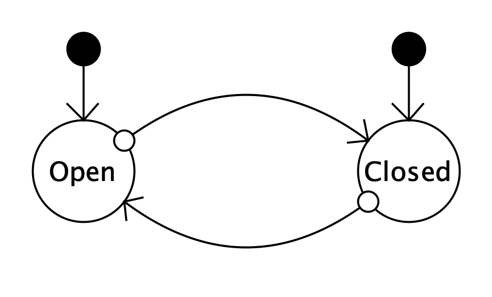
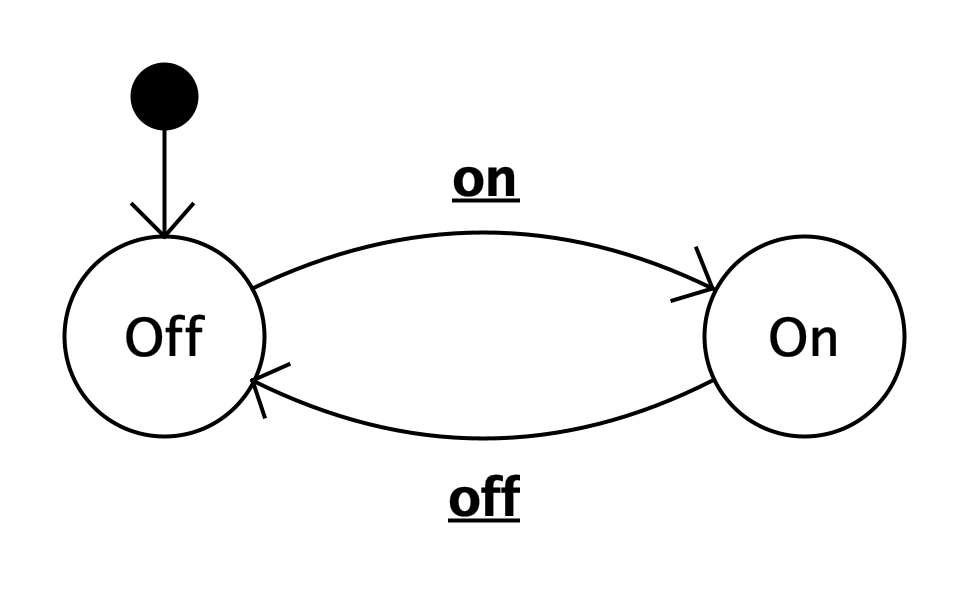
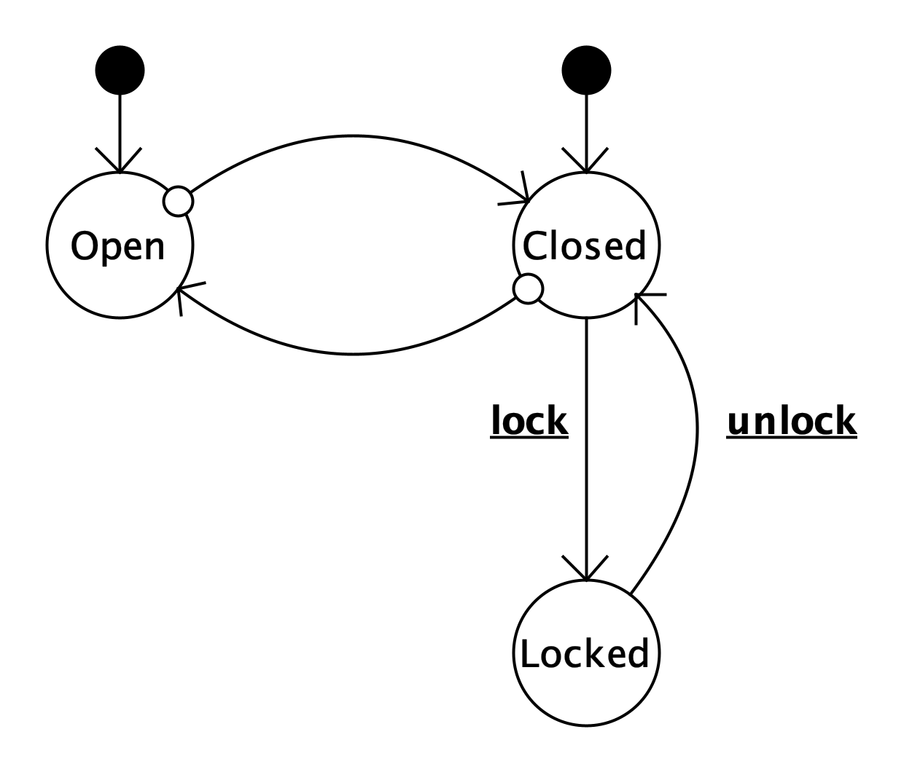
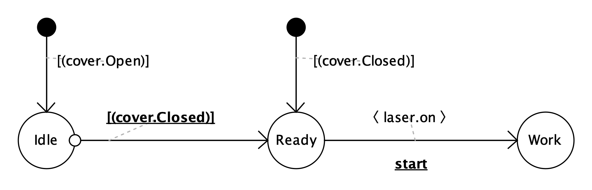

Part I established the problem: mutual, peer-to-peer control makes global behaviour hard to state and harder to verify, and this cost grows exponentially with the number of interacting components. This part introduces the model that Part–Whole Statecharts propose in response. Rather than letting components observe and command one another freely, PWS introduces a single distinguished role — the controller — that coordinates a collection of otherwise silent components, the Assembly. Every new concept is again motivated by the problem it solves, before its formal shape is fixed.
Every engineered system is naturally organized as a hierarchy. A production line consists of machines. Each machine consists of devices. Devices consist of sensors and actuators.
At every level of this hierarchy we can identify two complementary concepts:
Part I showed what goes wrong when this distinction is left implicit: parts end up observing and commanding each other directly, and the intended behaviour of the whole is nowhere written down. PWS makes the distinction explicit. Instead of composing many independent state machines through mutual event exchange, PWS introduces a single controller that represents the behaviour of the whole, while the parts remain unaware that they are being coordinated.
The shift is not cosmetic. It relocates the coordination logic from a web of pairwise dependencies — scattered across every component — into one place: the controller. What was previously implicit in the interaction becomes explicit in a single artefact.
An Assembly is a collection of controlled machines, specified through their interfaces. Each interface describes a component by declaring:
The interface is thus the concrete representation of a controlled machine: it is how we express both what the component does on its own and what the controller can ask it to do. An Assembly is therefore fundamentally a collection of interfaces — it names its parts and declares their capabilities without smuggling in any coordination logic between them.
The Assembly itself contains no coordination logic. It merely describes the plant — the physical or logical devices the controller will have to coordinate. This is a deliberate restriction: by construction, an Assembly cannot smuggle in the kind of cross-component causal tangle described in Part I, because its components carry no reference to one another. Consequently, the observable behaviour of the Assembly as a whole — the sequences of global configurations the system exhibits to an external observer — emerges entirely from the interplay of individual component evolution and controller decisions. The controller does not predetermine this global behaviour; it choreographs it, step by step, by observing what has happened and deciding what to ask next.
Now that we understand how an Assembly is specified through interfaces, we need to examine how those interfaces actually work. A controlled machine behaves through two complementary mechanisms—the two aspects that every interface must declare: what the component does on its own, and what the controller can ask it to do.
Controlled machines may evolve in two different ways.
Autonomous transitions. Physical evolution not initiated by the controller. Examples include:
Consider the cover component in our running example—a sensor that detects whether a protective cover is open or closed. The cover's interface declares its autonomous transitions: it can move from Closed to Open when physically opened, or from Open to Closed when physically closed. The controller does not cause these transitions; it merely observes them.

Open or Closed (indicated by the black dots and descending arrows). Transitions between states occur autonomously when the physical cover is manipulated (marked by white circles). The controller observes these state changes but does not control them.Notice in the diagrammatic notation that the cover has two possible initial states: the component may start in either Open or Closed depending on the physical configuration at startup. The black dots above each state represent the initial state indicators—they declare that either entry point is valid. The arrows descending from these dots into the states show the possible transition paths from initialization. The small white circles positioned on the state boundaries mark the autonomous transitions: they signal that these transitions can occur spontaneously, without any controller intervention. This visual distinction—white circles for autonomous behaviour—contrasts sharply with the bold, underlined trigger labels we shall see in controlled components, making the difference between what the component does on its own and what it does only when commanded immediately apparent.
Triggered transitions. Explicit requests issued by the controller. Examples include:
By contrast, consider the laser component—an actuator that can be switched on or off. The laser's interface declares its triggered transitions: it can move from Off to On when the controller sends the on command, or from On to Off when the controller sends the off command. The laser does not spontaneously change state; it only responds to explicit controller requests.

on or off). The laser has no autonomous behaviour; it is purely responsive to controller directives.Notice the diagrammatic notation. Unlike the cover sensor, the laser has only a single initial state indicator (one black dot above the Off state): the laser always starts in the Off position, a constraint enforced by safety. The transitions are labeled with the trigger events on and off—rendered in bold and underlined to distinguish them visually as controller commands, not autonomous behaviour. This typographic emphasis signals that these transitions occur only when the controller explicitly issues these commands; they are prescribed, not observed.
Real components often combine both behaviours. Consider an enhanced cover with a locking mechanism: it can still move autonomously between Open and Closed states when physically manipulated, but it also responds to controller commands to transition from Closed to a Locked state. The component now exhibits both autonomous transitions—observed by the controller—and triggered transitions—prescribed by the controller.

Open and Closed) with triggered transitions (from Closed to Locked). This hybrid interface shows that a single component can be partially autonomous and partially controlled.This interface demonstrates that the distinction between sensor and actuator is not absolute. The cover is primarily observed—its Open/Closed states change autonomously—but it is also partially controlled: the transition to Locked occurs only through explicit controller command, indicated by the bold, underlined trigger labels lock and unlock. The diagram shows how both notations coexist: white circles mark where the component acts on its own, while bold underlined labels mark where the controller directs it. This hybrid pattern is common in real systems, where components exhibit a mix of autonomous and controllable behaviour.
The distinction between autonomous and triggered transitions is one of the key ideas of PWS. It separates what the world does on its own from what the controller asks the world to do — a distinction that mutual-control models blur, since any machine may fire a transition for either reason.
Controllers are state machines whose purpose is not to model physical behaviour but to coordinate the behaviour of the Assembly. Controllers have two streams of input:
In response to these inputs, controllers:
Notice the asymmetry this introduces, which is the direct antidote to the peer-to-peer coupling of Part I: the controller knows its components, but the components know nothing about the controller, nor do they communicate directly with one another.
Recursive composition: Controllers themselves can be controlled. A controller can expose an interface—declaring its observable states and the external triggers it accepts—and thereby become a controlled machine in a larger Assembly, coordinated by a higher-level controller. This recursive property is one of PWS's defining strengths and will be explored in detail in Section 8 (Hierarchical composition).
Interaction between controller and Assembly takes place through two complementary interfaces, realizing concretely the asymmetry introduced above.
Observation. The controller evaluates guards over component states. We express these guards using dot notation: [component.state] reads "the state of component is state". Examples include
[cover.Closed]
or
[laser.Off]
These expressions never modify the Assembly. They merely observe it.
Control. Whenever a controller transition fires, commands may be sent to controlled components. Examples include
<laser.on>
or
<cover.unlock>
Whether such commands succeed depends entirely on the destination component. The controller proposes; the component disposes.
These two complementary mechanisms—guards that observe and commands that control—will be rendered concrete in Section 6, where we examine an actual controller diagram (Figure 6.1) that demonstrates how observation and control interact in a real execution.
A PWS execution alternates between controller evolution and Assembly evolution. The global state of the system is therefore represented as
Current Controller State --> Current Assembly Configuration
where the right side represents the current configuration of the Assembly—the states of all its components. Autonomous component transitions and controller transitions jointly determine the evolution of the system.
Controllers, like Assembly components, are state machines. But they exhibit a rich set of transition types that reflect their coordinating role. Unlike the sensors and actuators of the Assembly, controllers can combine multiple transition mechanisms:

Notice how this controller diagram combines the notational elements we have seen in Assembly components. Initial transitions, which start from black dots, lead to specific controller states: the black dots themselves—called pseudostates—are not actual states where the controller resides, but rather formal entry points. In this diagram, the pseudostate is named Init. Each initial transition carries a guard, evaluated at system startup to determine which state the controller enters. Since the controller must start in exactly one state, the guards on initial transitions have a critical constraint: they must be disjoint (no two guards can both be true) and they must cover all possibilities (their union must include every possible Assembly configuration). This ensures that regardless of how the system is initialized, exactly one initial transition fires and the controller settles into a unique starting state.
Guard-triggered transitions (those guarded by expressions like [cover.Open]) fire when the controller observes that a condition holds in the Assembly—these are the controller's way of reacting to what the Assembly does. Event-triggered transitions with actions (labeled with commands in bold and underlined) represent the controller's way of influencing the Assembly—it sends commands like <laser.on> as it transitions. A single controller state may have multiple outgoing transitions, guarded by different conditions or actions, allowing the controller to decide its next move based on what it observes.
Formal Notation:
• Init denotes the initial pseudostate. Every controller has exactly one initial pseudostate from which all initial transitions originate.
• Sem(s) denotes the specified semantics of a controller state s: a constraint over Assembly configuration states, formally expressed as a logical predicate.
• Conf(s) denotes the set of configurations associated with controller state s. Initially (before computation), Conf(s) is empty for all states. As the system executes or is formally analyzed, configurations are accumulated into Conf(s), eventually reaching a final, stable set called the obtained semantics.
Consider the Cover–Laser execution shown in Figure 6.1. At startup, suppose the cover is Open: the initial transition guarded by [cover.Open] fires, and the controller enters the Idle state. The current global state is Idle --> (Open, Off). The controller waits in Idle, observing the Assembly. When the cover sensor autonomously reports Closed—the physical cover is closed—the guard-triggered transition fires: the controller observes [cover.Closed] and transitions to Ready. The current global state is now Ready --> (Closed, Off). This is the same state the controller would have reached directly if the cover had been Closed at startup. Now in the Ready state, the controller waits until the start event occurs. When start is triggered, the event-triggered transition fires: the controller sends the command <laser.on> to the laser component and transitions to the Work state. The laser responds to this command by transitioning from Off to On, and the current global state is Work --> (Closed, On).
A single execution step may therefore combine an autonomous Assembly move with a controller reaction, or consist of either alone. This alternation — rather than simultaneous broadcast among many machines — is what replaces the cascade-prone execution model of Part I.
Configurations constitute one of the central concepts of PWS. An Assembly configuration is a complete snapshot of the Assembly at a moment in time: it specifies the state of every component. Rather than having the controller reason directly about individual component states, PWS associates each controller state with a set of Assembly configurations—all the physical situations the designer considers equivalent from the perspective of coordination.
Anticipating our running example, for the Cover–Laser assembly, all possible Assembly configurations are formed by the Cartesian product of component states:
(Open, Off) — cover is open, laser is off(Open, On) — cover is open, laser is on(Closed, Off) — cover is closed, laser is off(Closed, On) — cover is closed, laser is onEach controller state will be associated with a subset of these configurations—specifically, the Assembly configurations that can occur while the controller resides in that state.
Example: The controller's Idle state might correspond to configurations where the cover is Open (regardless of the laser)—either (Open, Off) or (Open, On). From the controller's perspective, the system is waiting for the cover to close, and the Assembly is allowed to remain in any of these states. The Ready state might correspond to the single configuration (Closed, Off)—the precondition for safely starting the laser, and the only configuration the controller permits while in Ready.
Later — in Part III — these associations will become the formal semantics that define what each controller state means, and the basis of the Correct-by-Construction methodology. For now it suffices to understand that a controller state is not a label for a single physical situation, but rather represents a class of Assembly configurations—all the situations in which the controller's coordination logic is the same.
Every controller may itself become a controlled machine inside another Assembly. Consequently, PWS naturally supports hierarchical composition. A subsystem may therefore be treated either
or
The same module thus plays both roles at once — controller of what lies below, controlled component for what lies above. This double face is what we shall later call the Janus effect. This recursive organization is one of the fundamental strengths of the formalism: it is what allows Part IV and V to replace one large global verification with many small local ones, each scoped to a single level of the hierarchy.
Throughout the tutorial we shall progressively develop a small running example, the Cover–Laser assembly already anticipated in Sections 6 and 7. Initially it will simply illustrate the modelling concepts introduced in this part. Later it will become the basis for introducing configuration semantics (Part III), Correct-by-Construction (Part IV), and finally compositional verification (Part V).
The running example will evolve together with the reader, introducing new concepts only when they become necessary.